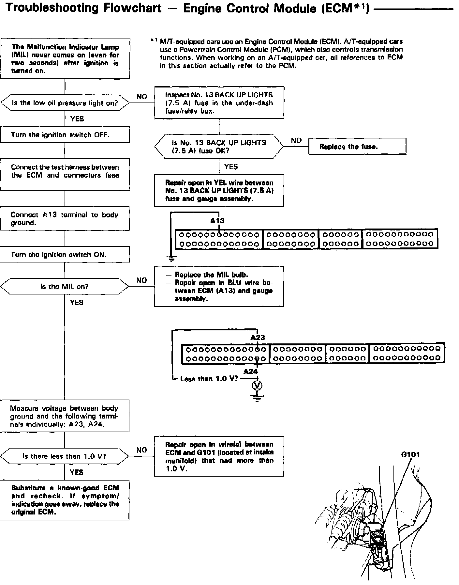
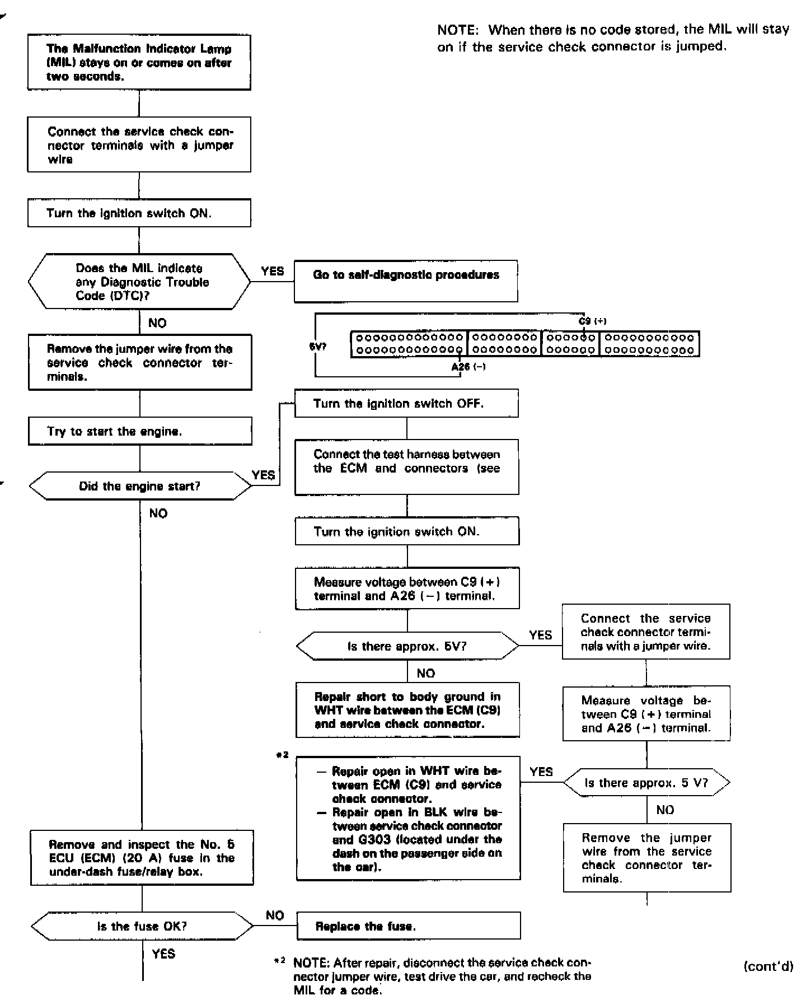
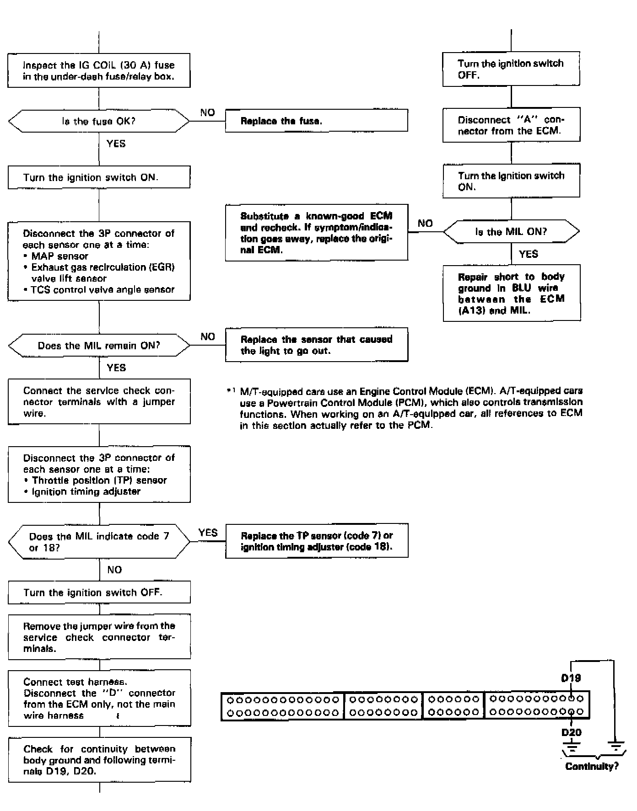
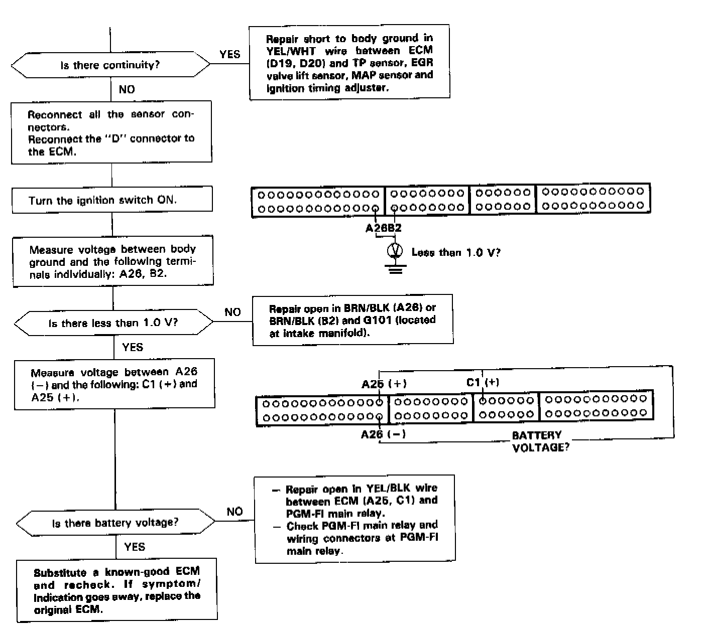

Operation CHARM
: Car repair manuals for everyone.
Home
>>
Acura
>>
1993
>>
Legend Coupe V6-3206cc 3.2L SOHC FI
>>
Repair and Diagnosis
>>
Powertrain Management
>>
Computers and Control Systems
>>
Testing and Inspection
>>
Symptom Related Diagnostic Procedures
>>
Malfunction Indicator Lamp
>>
Malfunction Indicator Light (MIL) Never Turns Off
Malfunction Indicator Light (MIL) Never Turns Off
MALFUNCTION INDICATOR LAMP (MIL) NEVER TURNS OFF

PART 1 OF 4

PART 2 OF 4

PART 3 OF 4

PART 4 OF 4